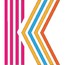

Sign in to Kinic Vault
Keep this tab open while Internet Identity completes sign-in. Your Vault stays synced across Web, iOS, and Chrome.
Kinic Vault uses end-to-end encryption. Passwords never leave your device unencrypted.

Keep this tab open while Internet Identity completes sign-in. Your Vault stays synced across Web, iOS, and Chrome.